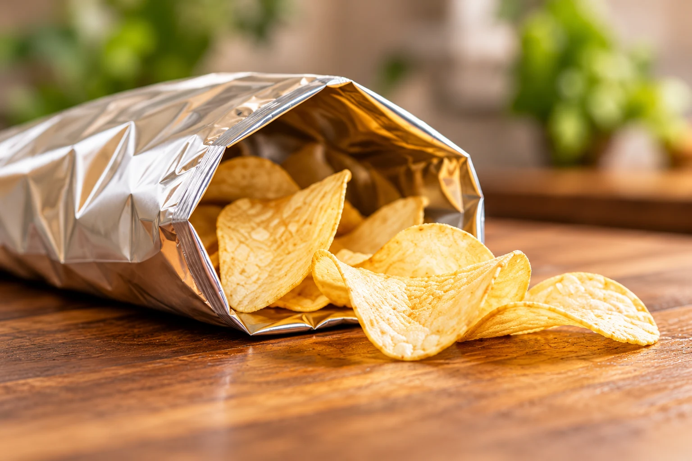
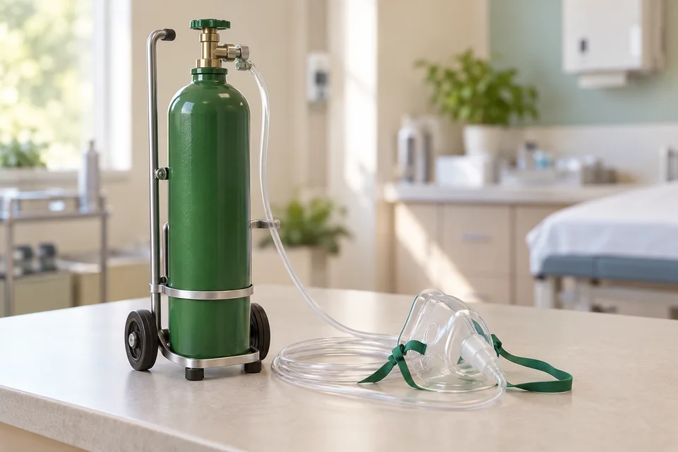
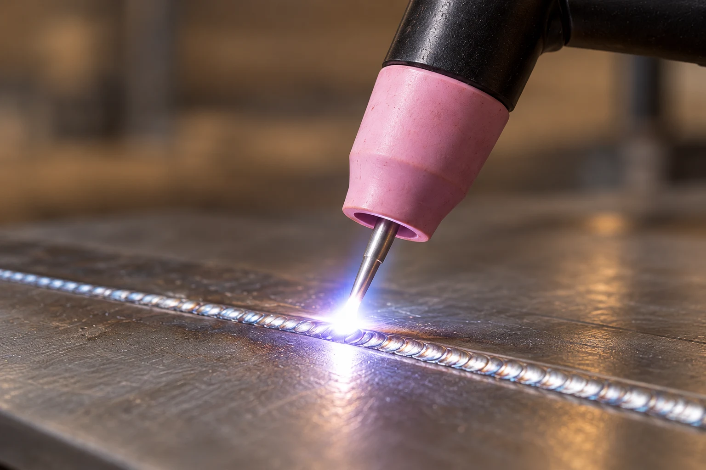

N2Nitrogen
氮氣
空氣中含量最多的氣體
約78%
占全部乾燥空氣的比例
外觀
無色、無臭
反應特性
一般條件下，
相對不易反應
燃燒特性
不可燃，不支持
一般燃燒

生活中的氮氣
食品充氮包裝
降低包裝內的氧氣，有助減緩食品油脂氧化。
小葵和阿公從桌上一只透明杯開始，認識看不見的空氣，再看看不同氣體有什麼性質，以及它們為什麼有不同用途。

空氣占有空間：從眼前的現象出發
杯子泡進水裡，裡面的紙團會不會濕？
一小團乾紙固定在杯底。保持杯口朝下，先把整只杯子浸入水中，再慢慢傾斜，看看紙團、水和氣泡怎麼變。
先觀察杯子直立倒扣和傾斜的差別，再試著拖動杯子看看。
先把整只杯子垂直放入水中。
先拖住杯子直直往下放；放開後，再抓住杯口沿著杯身轉動。
器材側面剖視示意，省略固定杯子的手。空氣保持透明；水位與氣泡為教學模型，未按真實時間或體積比例量測。
氣泡從杯口離開後，水進入杯內。
杯裡的空氣也占有空間。傾斜時，空氣逸出，水進入杯內碰到紙團，紙才會濕。
空氣的組成：比例、性質與生活用途
原來杯子裡也有空氣。裡面都是氧氣嗎？
空氣是多種氣體的混合物。先比較比例，再點選氣體，看看它的性質與用途。
體積比例・約數；先不計水蒸氣。
點選上方的色格或氣體名稱，看看它的性質與生活用途。
空氣中含量最多的氣體
約78%
占全部乾燥空氣的比例
無色、無臭
一般條件下，
相對不易反應
不可燃，不支持
一般燃燒

降低包裝內的氧氣，有助減緩食品油脂氧化。
空氣中含量第二多的氣體
約21%
占全部乾燥空氣的比例
無色、無臭
不易溶於水
本身不可燃，
支持一般燃燒

人體需要氧氣維持生命；醫療上可用於供氧。
乾燥空氣中含量第三多的氣體
約0.93%
占全部乾燥空氣的比例
無色、無臭
一般條件下，
相對不易反應
不可燃，不支持
一般燃燒

減少高溫金屬與周圍空氣接觸，有助減少氧化。
這一格合併氬氣與其餘少量氣體，不全是氬氣。氬氣約占全部乾燥空氣的0.93%；其餘包含二氧化碳等。
包含二氧化碳等多種氣體；這裡不再包含已單獨列出的氬氣，也不能把其餘成分全部當成二氧化碳。
「永久」不是永遠不變，也不表示不會發生反應。
乾燥空氣仍然包含二氧化碳等變動氣體；只是不計水蒸氣。
氧氣實驗：製備與收集
氧氣在空氣中看不見，要怎麼製備一些，再把它收集起來呢？
用雙氧水來製備，再用排水法收集。留意導管的位置，以及集氣瓶內的水位。
準備材料：先認識材料用途，再按下一步。
氧氣透明無色；水色、流向標記及縮時動作為教學示意，不代表真實反應時間或產率。
在水下蓋好集氣瓶，將樣本標示清楚。
二氧化碳實驗：製備與收集
收集氧氣用了水，二氧化碳也要用一樣的方法嗎？
這次用大理石和稀鹽酸製氣，再用直立的集氣瓶收集。看看原有的空氣從哪裡離開。
點選物品或名稱，看看它是什麼、在實驗中做什麼。
提醒：圖片供辨認器材，實際實驗由教師指導；不提供藥品劑量。
先放入大理石，再加入稀鹽酸，最後接好塞子與導管。
正在操作的位置近看
提醒：先檢查導管暢通；產氣端的導管入口在液面上方，集氣瓶外的出口也不堵住。
這時導管出口還在集氣瓶外，先不收集。
正在操作的位置近看
提醒：動畫只示意排氣順序；不能用動畫秒數判定真實裝置已排盡空氣。
觀察導管口、集氣瓶方向，以及原有空氣離開的位置。
正在操作的位置近看
提醒：不用滿水倒置瓶，也沒有水位下降。箭頭只是流向標記，二氧化碳本身無色。
瓶口朝上，留意移出導管與蓋上玻璃片的先後。
正在操作的位置近看
提醒：導管移出後仍保持排氣暢通；本例在空氣中蓋片，不是在水下封口。
先認識材料，再依步驟觀察組裝、排氣與收集。
二氧化碳無色；液體色澤與箭頭只供辨識，氣體會混合，並非固定分層。動畫時間僅為教學示意，不代表真實反應速率、劑量、產率或實際集滿時間。二氧化碳會溶於水，本例選向上排空氣法，不能說它絕對不能用排水法收集。
完成收集後，將這份已標示的二氧化碳樣本與氧氣分開取用，到下一區比較性質。前往收集氣體的性質比較 →
氣體性質：木條比較與石灰水檢驗
兩瓶氣體都收集好了，看起來都透明，要怎麼比較它們的性質呢？
用起始狀態相近的木條來比較，再取另一份二氧化碳樣本，觀察澄清石灰水的變化。
把起始餘燼相近的木條，同時放入兩瓶已知氣體，使用相同深度與觀察時間。
氧氣中的木條復燃；二氧化碳中的餘燼漸暗，未復燃。
這裡比較的是已知氧氣與二氧化碳樣本。木條未復燃不能單獨辨認二氧化碳，還要參考其他檢驗。
氧氣讓帶餘燼的木條復燃。燃燒的是木條，氧氣幫助它燃燒。
木條與石灰水觀察使用同一來源、分開取用的二氧化碳樣本；不把木條觀察後的氣體當成未改變的純樣本。
氧氣讓木條復燃；二氧化碳沒有讓它復燃，還能讓澄清石灰水變混濁。
帶餘燼木條復燃，支持燃燒；木條是燃料。
不支持一般燃燒；通入適量時，能使澄清石灰水變混濁。
未復燃或熄火都不能單獨確認氣體種類；這裡的二氧化碳檢驗重點是澄清石灰水變混濁。
二氧化碳不支持一般燃燒，並可降低燃燒處周圍的氧氣濃度。
二氧化碳能溶於水，製作飲料時可加壓使較多二氧化碳溶入。
二氧化碳是無色、無臭的氣體；本例不延伸反應方程式、過量通氣或環境議題。
單元小測
整理組成、製備、性質與用途。
看起來都透明的氣體，性質卻不一樣。我想把它們整理清楚。
就根據組成資料、製備材料和觀察結果，完成這份氣體介紹吧。